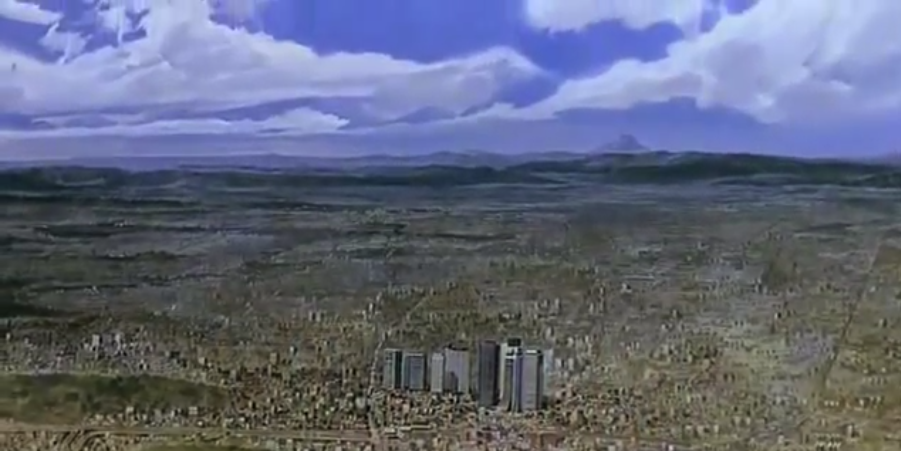
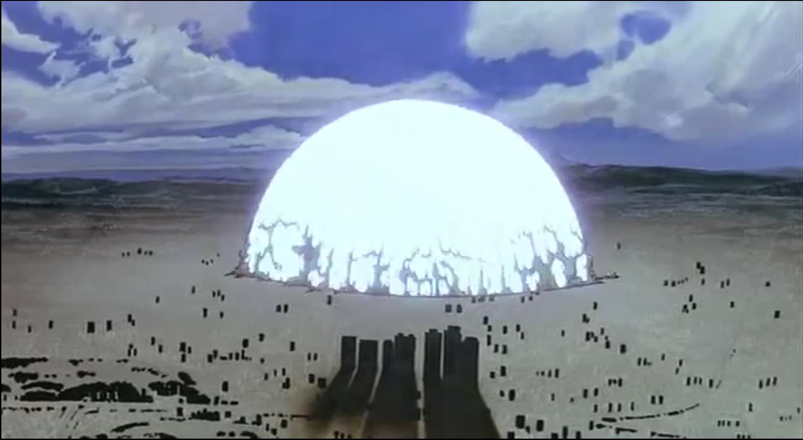

(Akira)Even up until the modern day, The effects of WWII and specifically the dropping of the Nuclear Bomb on Japan is very visible in art produced in the nation. These images are from the anime movie "Akira", a film that helped define the genre from that point on. It reflects the Post War anxieties in that its plot essentially revolves around a massive uncontrolable power called the Akira power that had once destroyed tokyo and now threatens to do so again. This bears a striking similarity to the fear of the Nuclear bomb in Japan.